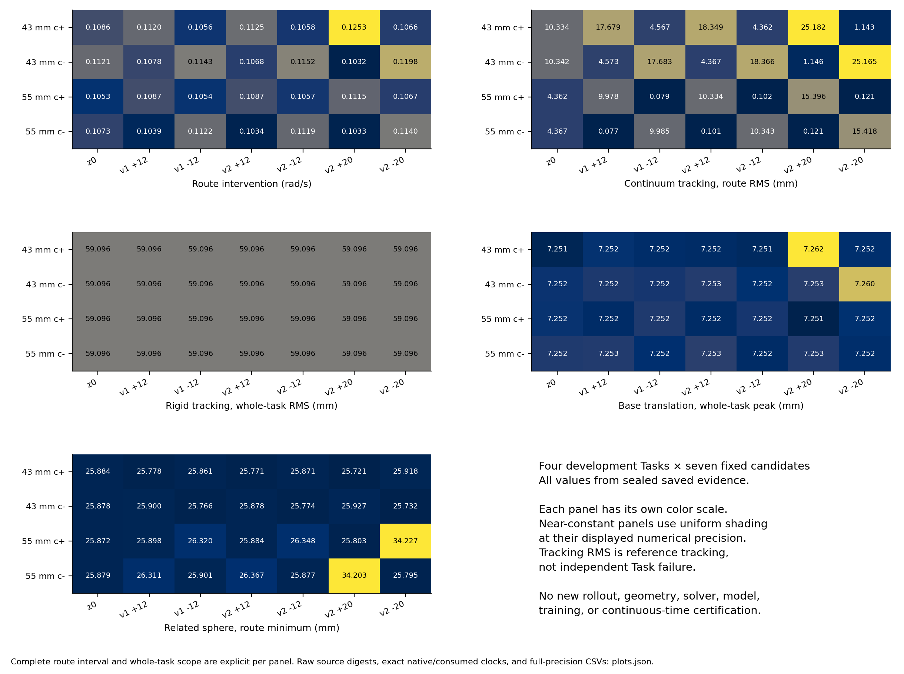

V6.4-B.3.1 · 全套保存状态可视化
四个固定开发任务、七种参考，全部 28 组结果同步展示五视角、连续体侧视、双臂末端轨迹、位置与姿态误差、基座漂移及保存的净空诊断。六条旧 B.3 原件复用与 22 条新增执行保留各自来源。
GitHub 可读目录 / 下载链接 · 原两张研究图、28 候选与有限教师 · 研究报告 · 媒体清单 · 验证收据
选择任务和参考
五视角组合
打开 / 下载当前视角视频。五视角分别为总览、正面、侧面、俯视、等轴。
连续体侧视
打开 / 下载连续体侧视视频。独立近景相机，刚性臂半透明；世界坐标 RGB = XYZ。
绿色：按保存时钟求值的解析残差参考；红色：独立 Task/base 曲线；青色：保存实际末端轨迹。视频只选择已有状态并调用 mj_forward，不积分、不插值、不续接。呈现帧率为 15 fps，源状态间隔 2 ms；编码包含 t=0 与精确末状态，片长约 27.067 s。默认海报选取冻结路线窗口的中点附近帧（t≈10.2 s）；原视频中点海报仍保留。部署状态保持 NOT_MET。
当前槽位：轨迹与误差


执行参考误差使用真正消费的控制边界参考；独立 Task/base 曲线偏差单列。合法中间绕行会改变 base 偏差，该诊断不代替 Task 锚点与原安全门禁。阴影标记冻结路线区间。净空沿用原查询范围与删失标记，不作连续时间安全证明。
下载状态抽样数据 CSV（20 ms） · 下载消费参考数据 CSV · 下载控制诊断 CSV · 全部图表、数值摘要与来源
当前槽位数值摘要
当前任务：七参考完整比较
固定七参考全部保留，不筛选最好结果。汇总值来自原保存数组；质量教师与学习收益结论见原研究报告。
全部四任务 × 七参考：数值总览

完整固定开发集的数值比较；原安全与Task结论、有限质量教师结论分别保留。
原研究结论与来源
本页是在已发布研究提交 e67f8cf 上新增的媒体补充。原实验目录、两图仪表板、portable release、run03 独立审查及其清单不修改；当前入口随后指向本页。


有限 teacher 较最佳常量低 3.27%、较冻结几何规则低 1.03%；同幅值 v2 没有一致优势，Diffusion 收益未建立。该结论及部署 NOT_MET 保持。
全部 28 槽：直接链接
GitHub 页面可通过 README 与下表查看图片、打开或下载 MP4。交互目录不依赖外部库，使用本地嵌入数据。
| 槽位 | 任务 / 参考 | 原来源 | 五视角 | 连续体侧视 | 末端轨迹 | 跟踪误差 | 净空 / 基座 | 控制诊断 |
|---|---|---|---|---|---|---|---|---|
| EA_00 | b3_mother_00_c_plus z0 | PILOT_00 REUSE_ORIGINAL_EVIDENCE | 五视角 | 连续体侧视 | 末端轨迹 | 跟踪误差 | 净空 / 基座 | 控制诊断 |
| EA_01 | b3_mother_00_c_plus v1_plus12 | PILOT_01 REUSE_ORIGINAL_EVIDENCE | 五视角 | 连续体侧视 | 末端轨迹 | 跟踪误差 | 净空 / 基座 | 控制诊断 |
| EA_02 | b3_mother_00_c_plus v1_minus12 | PILOT_02 REUSE_ORIGINAL_EVIDENCE | 五视角 | 连续体侧视 | 末端轨迹 | 跟踪误差 | 净空 / 基座 | 控制诊断 |
| EA_03 | b3_mother_00_c_plus v2_plus12 | EA_03 NEW_FIXED_ACTUAL_SLOT | 五视角 | 连续体侧视 | 末端轨迹 | 跟踪误差 | 净空 / 基座 | 控制诊断 |
| EA_04 | b3_mother_00_c_plus v2_minus12 | EA_04 NEW_FIXED_ACTUAL_SLOT | 五视角 | 连续体侧视 | 末端轨迹 | 跟踪误差 | 净空 / 基座 | 控制诊断 |
| EA_05 | b3_mother_00_c_plus v2_plus20 | EA_05 NEW_FIXED_ACTUAL_SLOT | 五视角 | 连续体侧视 | 末端轨迹 | 跟踪误差 | 净空 / 基座 | 控制诊断 |
| EA_06 | b3_mother_00_c_plus v2_minus20 | EA_06 NEW_FIXED_ACTUAL_SLOT | 五视角 | 连续体侧视 | 末端轨迹 | 跟踪误差 | 净空 / 基座 | 控制诊断 |
| EA_07 | b3_mother_00_c_minus z0 | PILOT_03 REUSE_ORIGINAL_EVIDENCE | 五视角 | 连续体侧视 | 末端轨迹 | 跟踪误差 | 净空 / 基座 | 控制诊断 |
| EA_08 | b3_mother_00_c_minus v1_plus12 | PILOT_04 REUSE_ORIGINAL_EVIDENCE | 五视角 | 连续体侧视 | 末端轨迹 | 跟踪误差 | 净空 / 基座 | 控制诊断 |
| EA_09 | b3_mother_00_c_minus v1_minus12 | PILOT_05 REUSE_ORIGINAL_EVIDENCE | 五视角 | 连续体侧视 | 末端轨迹 | 跟踪误差 | 净空 / 基座 | 控制诊断 |
| EA_10 | b3_mother_00_c_minus v2_plus12 | EA_10 NEW_FIXED_ACTUAL_SLOT | 五视角 | 连续体侧视 | 末端轨迹 | 跟踪误差 | 净空 / 基座 | 控制诊断 |
| EA_11 | b3_mother_00_c_minus v2_minus12 | EA_11 NEW_FIXED_ACTUAL_SLOT | 五视角 | 连续体侧视 | 末端轨迹 | 跟踪误差 | 净空 / 基座 | 控制诊断 |
| EA_12 | b3_mother_00_c_minus v2_plus20 | EA_12 NEW_FIXED_ACTUAL_SLOT | 五视角 | 连续体侧视 | 末端轨迹 | 跟踪误差 | 净空 / 基座 | 控制诊断 |
| EA_13 | b3_mother_00_c_minus v2_minus20 | EA_13 NEW_FIXED_ACTUAL_SLOT | 五视角 | 连续体侧视 | 末端轨迹 | 跟踪误差 | 净空 / 基座 | 控制诊断 |
| EA_14 | b31_mother_00_d055_c_plus z0 | EA_14 NEW_FIXED_ACTUAL_SLOT | 五视角 | 连续体侧视 | 末端轨迹 | 跟踪误差 | 净空 / 基座 | 控制诊断 |
| EA_15 | b31_mother_00_d055_c_plus v1_plus12 | EA_15 NEW_FIXED_ACTUAL_SLOT | 五视角 | 连续体侧视 | 末端轨迹 | 跟踪误差 | 净空 / 基座 | 控制诊断 |
| EA_16 | b31_mother_00_d055_c_plus v1_minus12 | EA_16 NEW_FIXED_ACTUAL_SLOT | 五视角 | 连续体侧视 | 末端轨迹 | 跟踪误差 | 净空 / 基座 | 控制诊断 |
| EA_17 | b31_mother_00_d055_c_plus v2_plus12 | EA_17 NEW_FIXED_ACTUAL_SLOT | 五视角 | 连续体侧视 | 末端轨迹 | 跟踪误差 | 净空 / 基座 | 控制诊断 |
| EA_18 | b31_mother_00_d055_c_plus v2_minus12 | EA_18 NEW_FIXED_ACTUAL_SLOT | 五视角 | 连续体侧视 | 末端轨迹 | 跟踪误差 | 净空 / 基座 | 控制诊断 |
| EA_19 | b31_mother_00_d055_c_plus v2_plus20 | EA_19 NEW_FIXED_ACTUAL_SLOT | 五视角 | 连续体侧视 | 末端轨迹 | 跟踪误差 | 净空 / 基座 | 控制诊断 |
| EA_20 | b31_mother_00_d055_c_plus v2_minus20 | EA_20 NEW_FIXED_ACTUAL_SLOT | 五视角 | 连续体侧视 | 末端轨迹 | 跟踪误差 | 净空 / 基座 | 控制诊断 |
| EA_21 | b31_mother_00_d055_c_minus z0 | EA_21 NEW_FIXED_ACTUAL_SLOT | 五视角 | 连续体侧视 | 末端轨迹 | 跟踪误差 | 净空 / 基座 | 控制诊断 |
| EA_22 | b31_mother_00_d055_c_minus v1_plus12 | EA_22 NEW_FIXED_ACTUAL_SLOT | 五视角 | 连续体侧视 | 末端轨迹 | 跟踪误差 | 净空 / 基座 | 控制诊断 |
| EA_23 | b31_mother_00_d055_c_minus v1_minus12 | EA_23 NEW_FIXED_ACTUAL_SLOT | 五视角 | 连续体侧视 | 末端轨迹 | 跟踪误差 | 净空 / 基座 | 控制诊断 |
| EA_24 | b31_mother_00_d055_c_minus v2_plus12 | EA_24 NEW_FIXED_ACTUAL_SLOT | 五视角 | 连续体侧视 | 末端轨迹 | 跟踪误差 | 净空 / 基座 | 控制诊断 |
| EA_25 | b31_mother_00_d055_c_minus v2_minus12 | EA_25 NEW_FIXED_ACTUAL_SLOT | 五视角 | 连续体侧视 | 末端轨迹 | 跟踪误差 | 净空 / 基座 | 控制诊断 |
| EA_26 | b31_mother_00_d055_c_minus v2_plus20 | EA_26 NEW_FIXED_ACTUAL_SLOT | 五视角 | 连续体侧视 | 末端轨迹 | 跟踪误差 | 净空 / 基座 | 控制诊断 |
| EA_27 | b31_mother_00_d055_c_minus v2_minus20 | EA_27 NEW_FIXED_ACTUAL_SLOT | 五视角 | 连续体侧视 | 末端轨迹 | 跟踪误差 | 净空 / 基座 | 控制诊断 |


保存状态渲染与数值后处理是本次可视化成本，不计作新增实际闭环、独立实验或安全验收。原研究完整证据与媒体补充分别记账。